Project 4a: Image Warping and Mosaicing
Part A recovers homographies from hand-picked correspondences, warps images by inverse mapping with nearest-neighbor and bilinear interpolation written from scratch, rectifies planar objects, and blends photos taken from one spot into mosaics.
A.1 Shoot and digitize pictures
Each mosaic set was shot from one spot by rotating the camera instead of moving it, so the photos in a set are related by projective transformations (a fixed center of projection). The three sets below are the source images for the mosaics in A.4. The photo marked reference is the one I leave unwarped; the others are warped into its frame. The two rectification photos are shown in A.3.
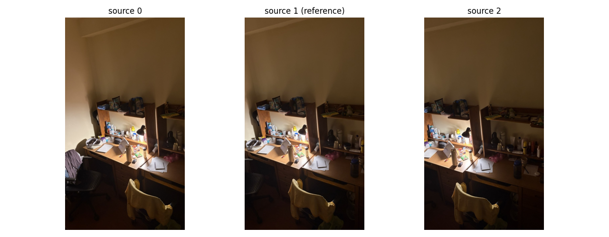
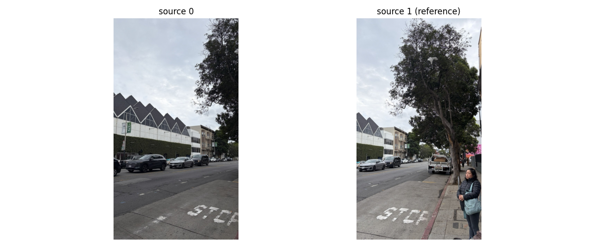
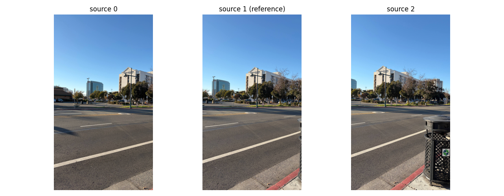
A.2 Recover homographies
A homography maps a point \((x, y)\) to \((x', y')\) through \[ \begin{bmatrix} x' \\ y' \\ w \end{bmatrix} \sim H \begin{bmatrix} x \\ y \\ 1 \end{bmatrix}, \qquad H = \begin{bmatrix} a & b & c \\ d & e & f \\ g & h & 1 \end{bmatrix}, \] so \(x' = \dfrac{ax + by + c}{gx + hy + 1}\) and \(y' = \dfrac{dx + ey + f}{gx + hy + 1}\). Multiplying out the denominator gives two equations that are linear in the eight unknowns for every correspondence: \[ \begin{aligned} x' &= ax + by + c - g\,x x' - h\,y x' \\ y' &= dx + ey + f - g\,x y' - h\,y y' \end{aligned} \] Stacking \(n\) correspondences gives \(A\mathbf{h} = \mathbf{b}\), where \(A\) is \(2n \times 8\) and \(\mathbf{h} = (a, b, c, d, e, f, g, h)^\top\). With \(n = 4\) the system is exactly determined, but it is very sensitive to click error. With \(n > 4\) it is overdetermined, and I solve it by least squares.
def computeH(im1_pts, im2_pts):
# H maps im1 -> im2 (p' = Hp). Points are (x, y), shape (n, 2), n >= 4.
A, b = [], []
for (x, y), (xp, yp) in zip(im1_pts, im2_pts):
A.append([x, y, 1, 0, 0, 0, -x*xp, -y*xp]); b.append(xp)
A.append([0, 0, 0, x, y, 1, -x*yp, -y*yp]); b.append(yp)
A, b = np.array(A), np.array(b)
h, *_ = np.linalg.lstsq(A, b, rcond=None) # least squares when n > 4
return np.append(h, 1).reshape(3, 3), A, bI picked points by clicking on the images (a small matplotlib click tool) and saved them to a file. For the mosaics I used 12 to 16 correspondences per pair, spread over the overlap and placed on sharp corners and distinctive features. For rectification I clicked the four corners of a known rectangle and mapped them to the corners of an axis-aligned rectangle.
The system of equations (rectification of the first image)
Four corner clicks in the image, mapped to the corners of a 400×300 rectangle (0,0), (399,0), (399,299), (0,299), give an 8×8 system. Each row is one equation; the columns are the coefficients of \(a, b, c, d, e, f, g, h\), followed by the right-hand side \(\mathbf{b}\):
a b c d e f g h | rhs
185.6 315.3 1.0 0.0 0.0 0.0 0.0 0.0 | 0
0.0 0.0 0.0 185.6 315.3 1.0 0.0 0.0 | 0
614.2 230.4 1.0 0.0 0.0 0.0 -245050.2 -91921.7 | 399
0.0 0.0 0.0 614.2 230.4 1.0 0.0 0.0 | 0
531.0 734.6 1.0 0.0 0.0 0.0 -211886.6 -293114.4 | 399
0.0 0.0 0.0 531.0 734.6 1.0 -158782.2 -219652.2 | 299
224.4 910.1 1.0 0.0 0.0 0.0 0.0 0.0 | 0
0.0 0.0 0.0 224.4 910.1 1.0 -67106.1 -272117.4 | 299The solution is the homography below. The mosaic systems have exactly the same form, just with more rows (24 to 32).
Correspondences and recovered homographies: rectification
With exactly four correspondences the fit is exact, so the reprojection error is 0 by construction. These homographies map the image onto the target rectangle (400×300 for the first, 300×400 for the second).
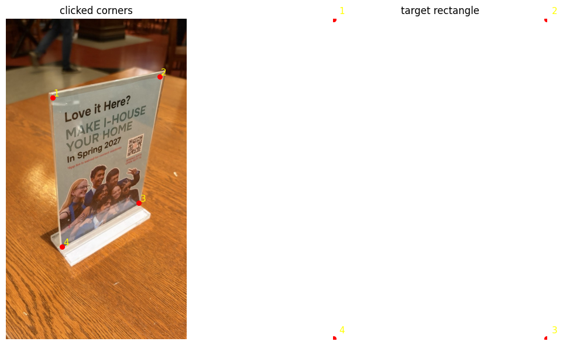
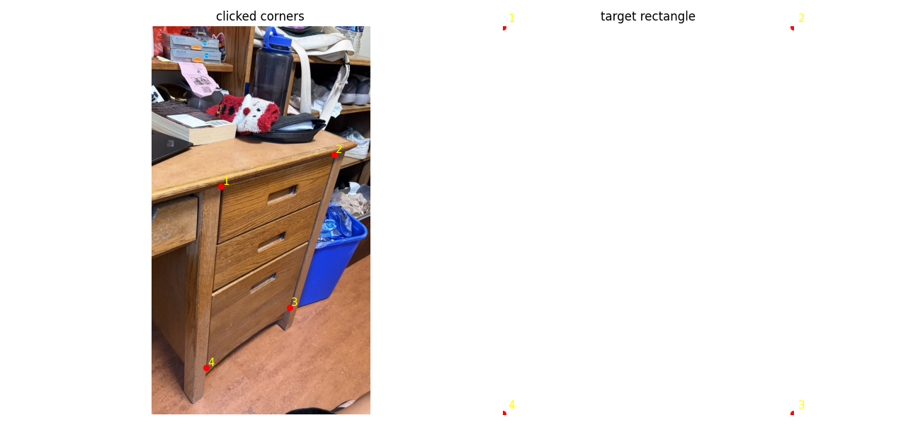
H (rectification 1)
[ 0.52676 -0.034354 -86.958 ]
[ 0.051035 0.25739 -90.642 ]
[ -0.00054742 -0.00039395 1 ]
H (rectification 2)
[ 0.36393 0.030327 -99.699 ]
[ 0.07661 0.2715 -160.9 ]
[ -0.00061733 -0.00043615 1 ]Correspondences and recovered homographies: mosaics
In each figure the left panel is the image being warped and the right panel is the reference. Numbers mark matching points. Each H maps the left image into the reference image's frame.
The table summarizes the fits; the residual is the distance between \(H p\) and the clicked reference point, in pixels.
| Set | Pair | Correspondences | Mean error (px) | Max error (px) |
|---|---|---|---|---|
| 1 | left → middle (reference) | 16 | 2.29 | 4.77 |
| 1 | right → middle (reference) | 14 | 2.55 | 4.58 |
| 2 | left → right (reference) | 12 | 2.38 | 4.98 |
| 3 | photo 1 → photo 2 (reference) | 13 | 2.52 | 7.97 |
| 3 | photo 3 → photo 2 (reference) | 13 | 3.43 | 8.14 |
Set 1, left → middle
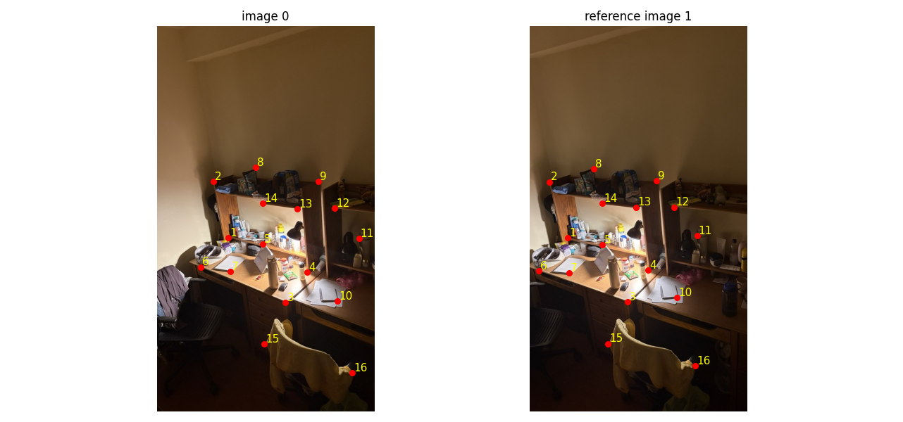
[ 1.0893 0.028712 -150.54 ]
[ 0.050004 1.038 -15.742 ]
[ 0.00012043 -2.7139e-06 1 ]Set 1, right → middle

[ 0.93281 0.006003 105.04 ]
[ -0.074309 0.99832 -4.201 ]
[ -0.00011632 2.4473e-05 1 ]Set 2, left → right
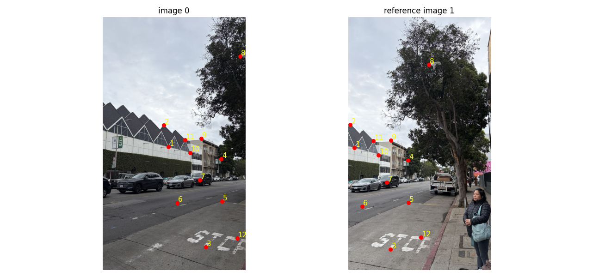
[ 1.2549 -0.046243 -347.5 ]
[ 0.27641 1.162 -119.95 ]
[ 0.00037177 -2.0136e-05 1 ]Set 3, photo 1 → photo 2
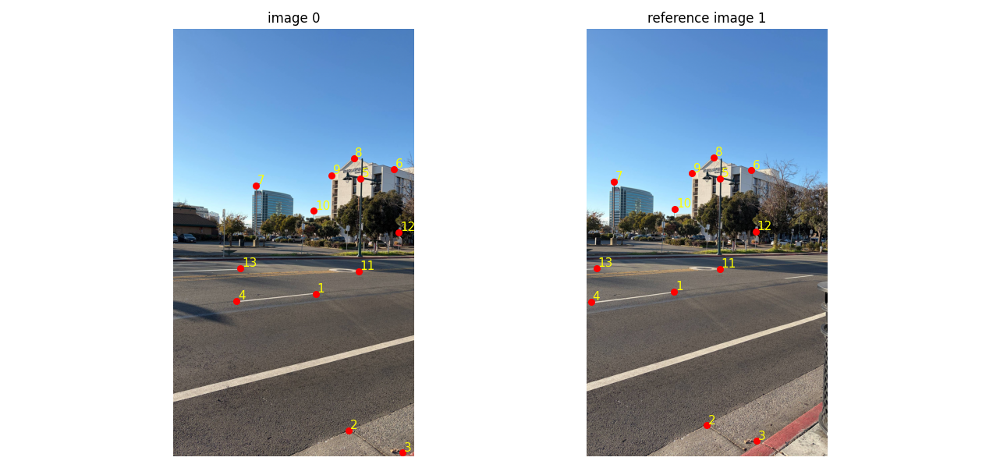
[ 1.1604 -0.011761 -243.06 ]
[ 0.1427 1.0957 -85.532 ]
[ 0.00017888 -1.6513e-06 1 ]Set 3, photo 3 → photo 2
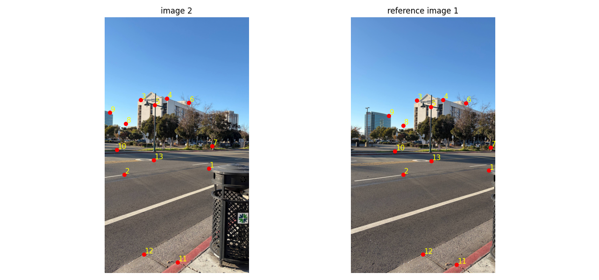
[ 0.89479 0.017766 191.25 ]
[ -0.095646 0.95822 41.108 ]
[ -0.00011615 -4.9267e-07 1 ]The mosaic residuals are about 2 to 3.5 px on average. Four correspondences would have fit with zero error, but the extra points average out my clicking error instead of letting the homography absorb it. The largest single residuals are about 4.6 to 8.1 px.
A.3 Warp the images
Both warps use inverse warping. For every pixel of the output canvas I compute \(p = H^{-1}p'\), divide by the last coordinate, and sample the source image at that location. Every output pixel is visited exactly once, so there are no holes.
- Convention. \((0,0)\) is the center of the first pixel, so a source location is inside the image when \(0 \le x \le w-1\) and \(0 \le y \le h-1\).
- Canvas size. I push the four image corners through \(H\) and take the bounding box. For mosaics I take the union of the boxes of all images, so everything lands on one shared canvas.
- Missing pixels. Output pixels whose source location falls outside the image get alpha 0. The function returns this mask, and the blending step uses it.
- Nearest neighbor rounds the source location to the closest pixel. Bilinear takes the weighted average of the four surrounding pixels, with weights from the fractional part of the location.
def _warp(im, H, interp, bbox=None):
h, w = im.shape[:2]
if bbox is None: # bounding box from the 4 corners through H
c = corners_through_H(im, H)
bbox = (int(np.floor(c[0].min())), int(np.floor(c[1].min())),
int(np.ceil(c[0].max())), int(np.ceil(c[1].max())))
x0, y0, x1, y1 = bbox
xs, ys = np.meshgrid(np.arange(x0, x1+1), np.arange(y0, y1+1))
pts = np.stack([xs.ravel(), ys.ravel(), np.ones(xs.size)])
src = np.linalg.inv(H) @ pts # inverse warp: output pixel -> source location
sx, sy = src[0] / src[2], src[1] / src[2] # (0,0) = center of the first pixel
valid = (sx >= 0) & (sx <= w-1) & (sy >= 0) & (sy <= h-1) # alpha mask
if interp == 'nn':
xi = np.clip(np.rint(sx).astype(int), 0, w-1)
yi = np.clip(np.rint(sy).astype(int), 0, h-1)
out = im[yi, xi]
else:
xf = np.clip(np.floor(sx).astype(int), 0, w-2); yf = np.clip(np.floor(sy).astype(int), 0, h-2)
dx = np.clip(sx - xf, 0, 1)[:, None]; dy = np.clip(sy - yf, 0, 1)[:, None]
out = ((1-dx)*(1-dy)*im[yf, xf] + dx*(1-dy)*im[yf, xf+1] +
(1-dx)*dy*im[yf+1, xf] + dx*dy*im[yf+1, xf+1])
out = out * valid[:, None]
shape = (y1-y0+1, x1-x0+1)
return out.reshape(*shape, im.shape[2]), valid.reshape(shape), (x0, y0)
def warpImageNearestNeighbor(im, H, bbox=None): return _warp(im, H, 'nn', bbox)
def warpImageBilinear(im, H, bbox=None): return _warp(im, H, 'bil', bbox)Rectification
To test the code on a single image, I took photos of objects I know are rectangles and clicked their four corners. The first is a poster in an acrylic stand, mapped to a 400×300 rectangle; the second is a set of desk drawers, mapped to a 300×400 rectangle. Both warps are shown for each image.
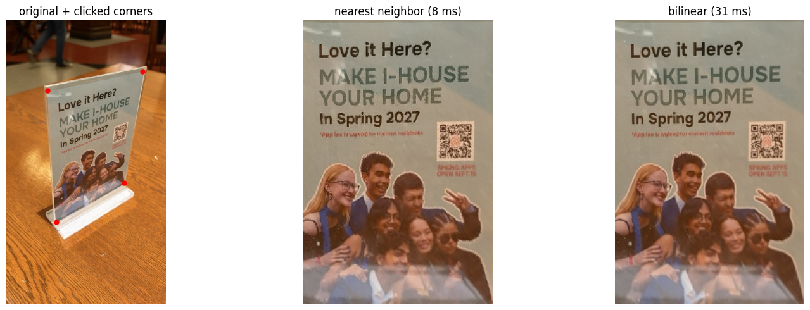
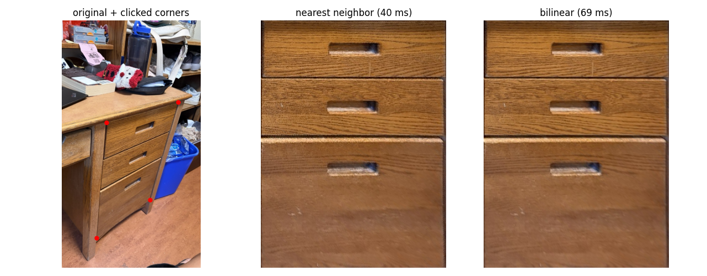
In both results the viewing angle is gone: the poster's text lines are horizontal and the drawer fronts are rectangles facing the camera. The edges of the rectified region follow the clicked corners.
Nearest neighbor vs. bilinear
Comparison: Zoomed in 8× with pixel-exact rendering, nearest neighbor (left) shows stair-stepped edges on letters and the drawer gap, while bilinear (right) has smooth edges.
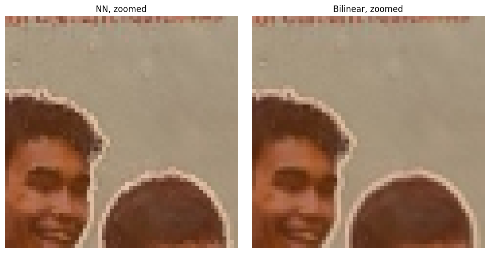
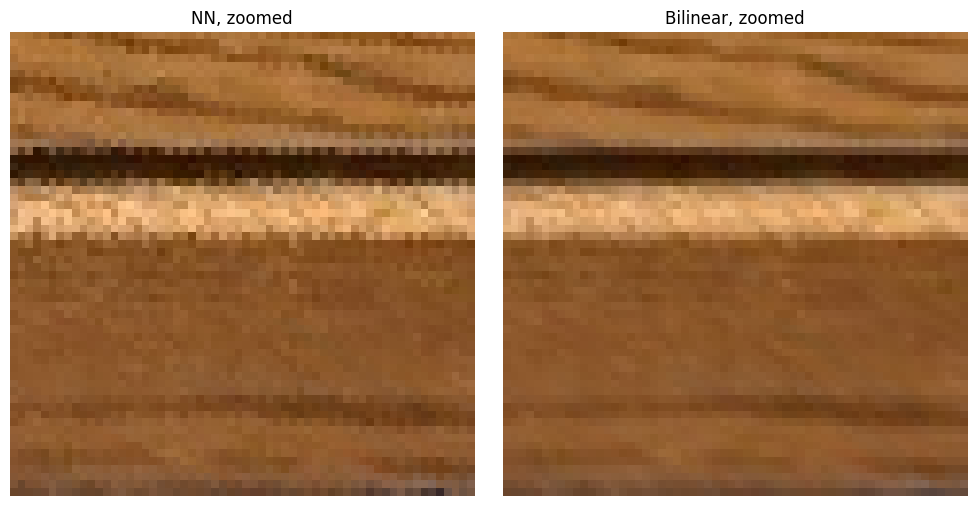
| Image | Output size | Nearest neighbor | Bilinear | Bilinear / NN |
|---|---|---|---|---|
| Rectification 1 | 400×300 | 25.6 ms | 81.6 ms | 3.2× |
| Rectification 2 | 300×400 | 39.5 ms | 69.1 ms | 1.8× |
Speed. Nearest neighbor does one lookup per output pixel. Bilinear does four lookups plus the weight arithmetic, so it was about 2 to 3 times slower in my runs. Both grow linearly with the number of output pixels, and the inverse mapping itself (the matrix multiply and divide) is shared. These are single timings on small images, so the exact ratio is noisy and I would only trust the order of magnitude.
Quality. Nearest neighbor creates jagged, stair-stepped edges and aliasing on diagonal lines and fine texture, because each output pixel copies a single source pixel and the rounding error changes along an edge. Bilinear averages neighbors, so edges are smooth, at the cost of slight blur. At normal size the two rectified images look close, and the difference shows up in the zoomed crops. For mosaics, where small misalignments and aliasing in the overlap would be visible, I use bilinear.
A.4 Blend the images into a mosaic
Procedure
- Reference frame. I leave one image unwarped and warp the others into its projection, using the homographies from A.2. For the two three-image sets the reference is the second photo, so both outer photos are warped by one homography each.
- Canvas. I push the corners of every image through its homography (the identity for the reference) and take the union of the bounding boxes. Every image is then warped onto that same canvas with bilinear inverse warping, which gives a stack of images and alpha masks.
- Weights. For each image the weight at a pixel is the Euclidean distance transform of its alpha mask: zero outside the image and growing toward its interior, so each image fades out near its own borders.
- Blend. A plain feathered average (weighted by these distances) removes the hard seam but can still blur high-frequency detail where the images are slightly misaligned. So I use a two-band blend. The low-pass band (a Gaussian blur with \(\sigma = 4\), computed with normalized convolution so the blurred borders do not go dark) is feather-averaged. The high-pass band (image minus its low-pass) is taken from whichever image has the larger weight at that pixel.
# weights: distance to the nearest invalid pixel of each warped image
ws = [distance_transform_edt(a) for a in alphas]
def blend_twoband(ims, alphas, ws, sigma=4):
lows = []
for im, a in zip(ims, alphas): # normalized convolution so borders don't go dark
af = a.astype(float); den = gaussian_filter(af, sigma) + 1e-8
lows.append(np.stack([gaussian_filter(im[..., k]*af, sigma) / den for k in range(3)], -1))
highs = [im - lo for im, lo in zip(ims, lows)]
wsum = sum(ws)
low = sum(w[..., None]*lo for w, lo in zip(ws, lows)) / (wsum[..., None] + 1e-8) # feathered low band
pick = np.argmax(np.stack(ws), 0) # high band from the image with the larger weight
high = np.zeros_like(low)
for i, hi in enumerate(highs): high[pick == i] = hi[pick == i]
return np.clip(low + high, 0, 1) * (wsum > 0)[..., None]Mosaic 1: room (3 photos)
Reference: middle photo. Correspondences: 16 and 14. Canvas: 999×1381.
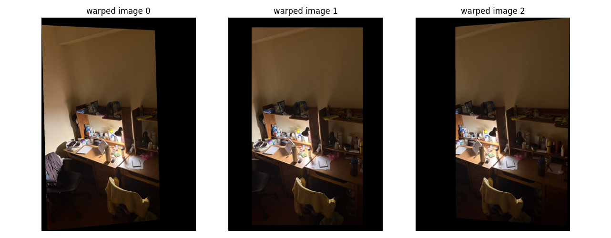
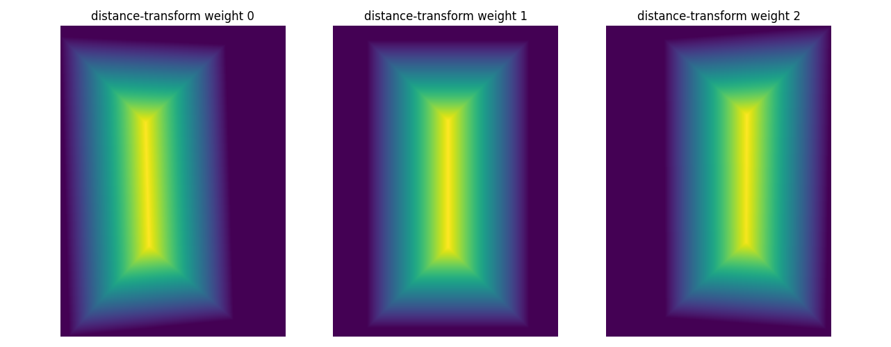
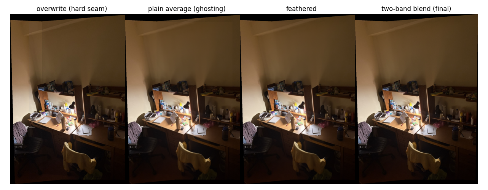

Mosaic 2: street (2 photos)
Reference: right photo, so the left photo is warped. Correspondences: 12. Canvas: 1138×1524.
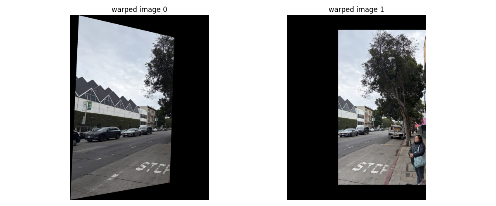
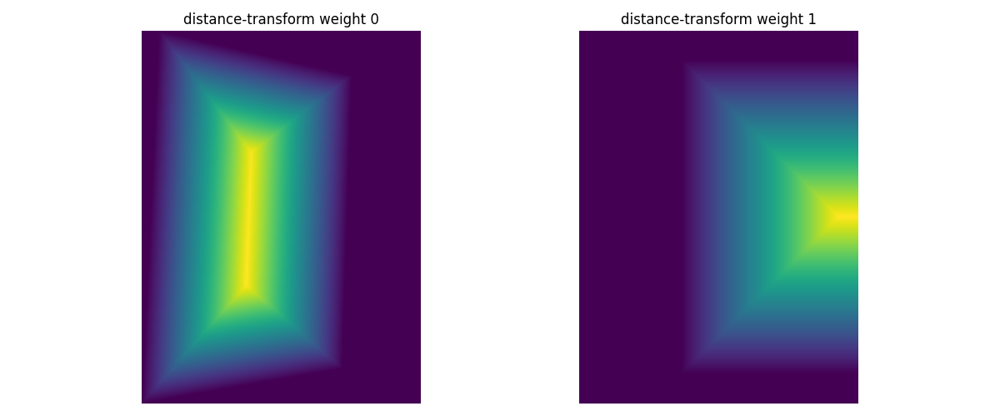
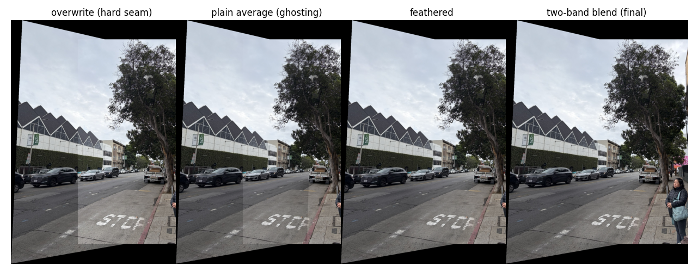

Mosaic 3: street corner (3 photos)
Reference: second photo. Correspondences: 13 and 13. Canvas: 1409×1758.
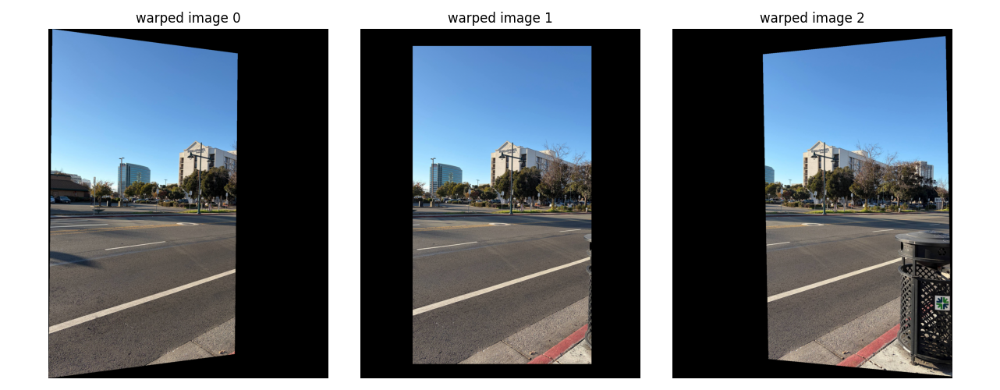
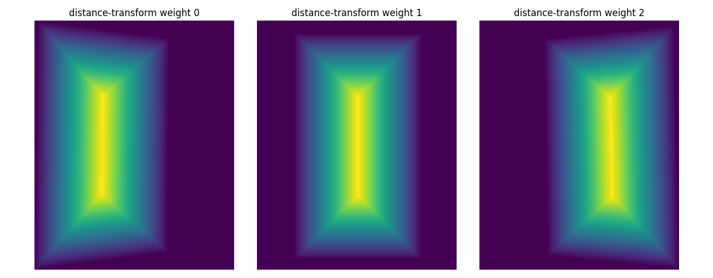
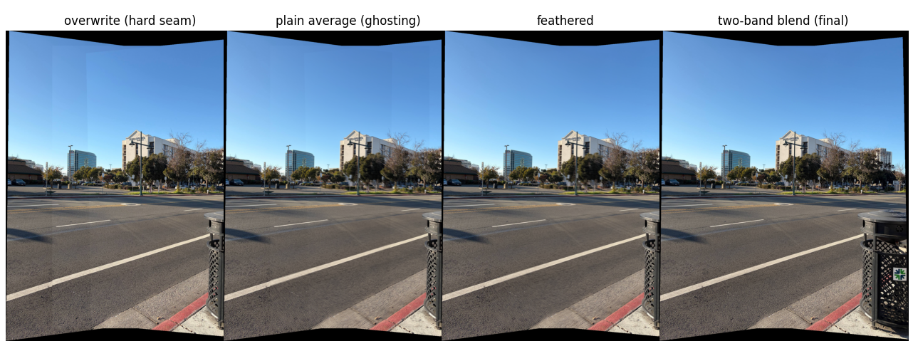

What the blending buys
In the comparison strips, overwriting leaves a hard vertical edge wherever one photo ends and the next begins, because neighboring photos differ in brightness (most obviously in the street mosaic, where the right photo is brighter than the left). A plain average keeps a visible brightness step at the edge of the overlap. The feathered average and the two-band blend turn that step into a gradual transition, and I do not see seams in the final mosaics at normal viewing size. The black areas are canvas that no photo covers, and the outlines are curved or slanted because each outer photo has been projected into the reference photo's view.
What I learned
The most important thing I learned is how much a homography depends on the quality of the correspondences rather than on the math. With exactly four clicks the fit is exact, so it reports zero error even when the clicks are slightly off, and that error moves the far corners of the warped image a lot. Using 12 to 16 points and a least-squares solve spreads my 2 to 3 pixel click error over many constraints. I also learned that inverse warping is what makes the whole pipeline simple: once the canvas is fixed, each output pixel just asks the source image for a value, so there are no holes, and the alpha mask falls out of the same bounds check that decides whether a lookup is valid.